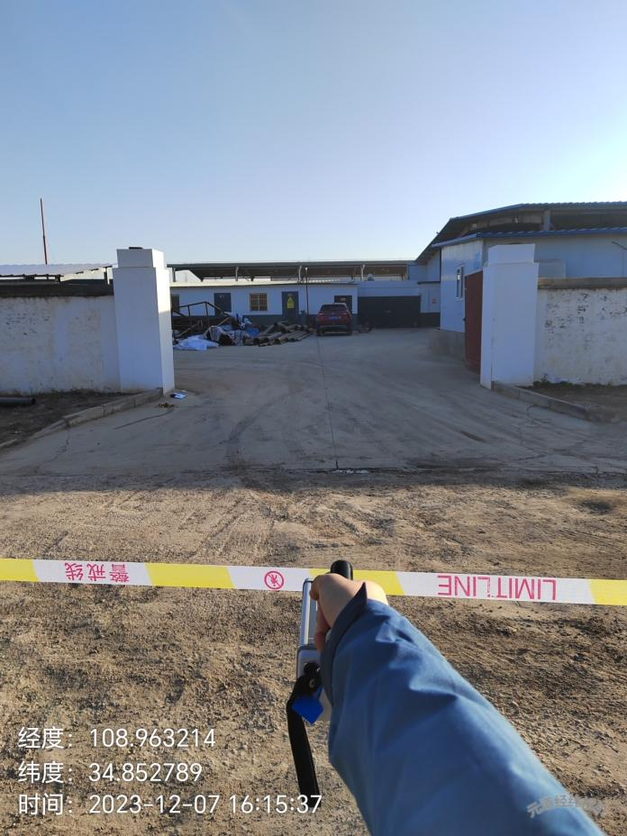
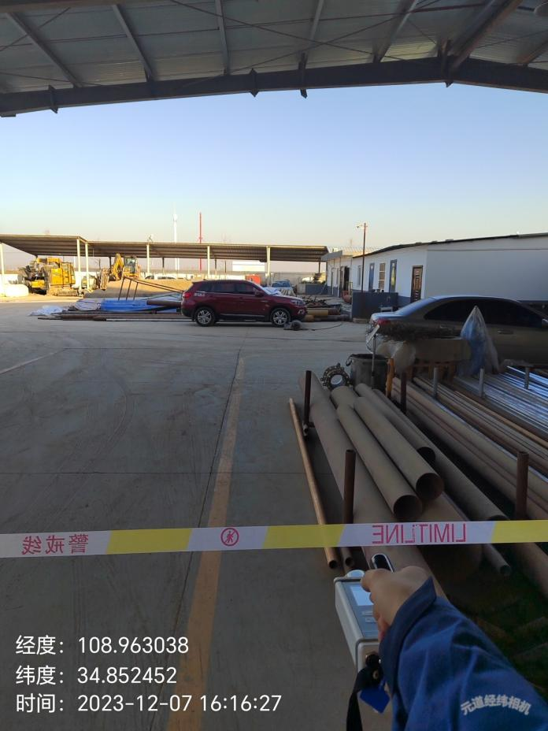

检 测 报 告
QNJC-2024-0001-FH
项目名称： | 使用射线装置核技术利用项目辐射环境检测 |
委托单位： | 铜川市志远燃气工程有限责任公司 |
检测性质： | 委托检测 |
报告日期： | 2023年12月14日 |
陕西秦洲核与辐射安全技术有限公司
（检验检测专用章）
检 测 报 告
QNJC-2024-0001-FH
项目名称： | 使用射线装置核技术利用项目辐射环境检测 |
委托单位： | 铜川市志远燃气工程有限责任公司 |
检测性质： | 委托检测 |
报告日期： | 2023年12月14日 |
陕西秦洲核与辐射安全技术有限公司
（检验检测专用章）
报告说明
1.本报告适用于陕西秦洲核与辐射安全技术有限公司电离辐射、电磁辐射等项目的检测报告。
2.本报告无陕西秦洲核与辐射安全技术有限公司“检验检测专用章”、无骑缝章、无章、无编制人、审核人、签发人签字无效。
3.现场检测，检测结果仅对当次检测时工况负责，委托方需对自己提供的工况等信息负责。
4.如委托单位对本报告检测数据有异议，应于收到本报告之日起十五日内向本公司提出书面申诉，逾期则视为认可检测结果。
5.本报告全部或部分复制，私自转让、盗用、冒用、涂改或以其他任何形式篡改的均属无效。
6.未经我公司同意，本报告不得用于委托范围之外的其他商业用途。
7.*为分包检测结果。
名 称：陕西秦洲核与辐射安全技术有限公司
地 址：陕西省西咸新区沣西新城中国西部科技创新港创科大厦12层
电 话：029-89586445
传 真：029-89586445
网 址：www.qznrs.net
邮政编码：712046

项目名称 | 使用射线装置核技术利用项目辐射环境检测 | 使用射线装置核技术利用项目辐射环境检测 | 使用射线装置核技术利用项目辐射环境检测 | ||||||
委托单位 | 铜川市志远燃气工程有限责任公司 | 铜川市志远燃气工程有限责任公司 | 铜川市志远燃气工程有限责任公司 | ||||||
检测地点 | 陕西省铜川市耀州区樱园路 | 陕西省铜川市耀州区樱园路 | 陕西省铜川市耀州区樱园路 | ||||||
联系人 | 孙富 | 联系电话 | 132 0919 6262 | ||||||
检测类别 | 电离辐射 | 委托编号 | QNJC-2024-0001-FH | ||||||
检测因子 | X、γ辐射剂量率 | 检测日期 | 2023年12月7日 | ||||||
检测依据 | 《辐射环境监测技术规范》（HJ 61-2021） 《环境γ辐射剂量率测量技术规范》（HJ 1157-2021） 《工业X射线探伤放射防护要求》（GBZ 117-2022） | 《辐射环境监测技术规范》（HJ 61-2021） 《环境γ辐射剂量率测量技术规范》（HJ 1157-2021） 《工业X射线探伤放射防护要求》（GBZ 117-2022） | 《辐射环境监测技术规范》（HJ 61-2021） 《环境γ辐射剂量率测量技术规范》（HJ 1157-2021） 《工业X射线探伤放射防护要求》（GBZ 117-2022） | ||||||
评价依据 | 《工业X射线探伤放射防护要求》（GBZ 117-2022） | 《工业X射线探伤放射防护要求》（GBZ 117-2022） | 《工业X射线探伤放射防护要求》（GBZ 117-2022） | ||||||
检测结果及结论 | 检测结果详见表3；检测结论详见表4 | 检测结果详见表3；检测结论详见表4 | 检测结果详见表3；检测结论详见表4 | ||||||
附件 | 现场检测照片 | 现场检测照片 | 现场检测照片 | ||||||
备注 | / | / | / | ||||||
一、检测仪器
表1 检测仪器基本信息
序号 | 仪器名称 | 型号/规格 | 编号 | 测量参数 | 溯源单位/证书编号 | 有效期至 |
1 | X、γ辐射剂量仪 | AT1123 | QNJC-YQ-101 | 1）连续测试： 50nSv/h~10Sv/h 2)单次脉冲或一系列脉冲：5μSv/h~10Sv/h |
河南省计量科学研究院/证书编号1023BY0501487 | 2024.10.07 |
2 | 激光测距望远镜 | 851E | QNJC-YQ-064 | 3m～600m | 中国测试技术研究院/校准字第202302002533号 | 2024.02.08 |
二、射线装置
表2 射线装置基本信息[1]
序号 | 装置名称 | 设备型号 | 设备编号 | 生产厂家 | 额定参数 | 射线装置分类 | 类型 | 使用场所 |
1 | X射线机 | XXG-2005 | 0223 | 沈阳宇时检测 设备有限公司 | 200kV 5mA | Ⅱ类 | 定向 | 移动式探伤 |
注：[1]委托方提供的信息。
三、检测结果
表3 检测结果
装置名称 | 装置名称 | X射线机 | X射线机 | 型 号 | 型 号 | XXG-2005 | XXG-2005 | ||||||||||||||||||||||||||||||||||||||||||||||||||||||||
类 型 | 类 型 | 定向 | 定向 | 编 号 | 编 号 | 0223 | 0223 | ||||||||||||||||||||||||||||||||||||||||||||||||||||||||
设备参数 | 设备参数 | 200kV，5mA | 200kV，5mA | 生产厂家 | 生产厂家 | 沈阳宇时检测设备有限公司 | 沈阳宇时检测设备有限公司 | ||||||||||||||||||||||||||||||||||||||||||||||||||||||||
使用场所 | 使用场所 | 室外探伤 | 室外探伤 | 本 底 | 本 底 | （0.110~0.114）μSv/h | （0.110~0.114）μSv/h | ||||||||||||||||||||||||||||||||||||||||||||||||||||||||
检测条件 | 检测条件 | 180kV，5mA；主束向下；探伤机上有局部屏蔽，使用2mm铅板遮挡。 | 180kV，5mA；主束向下；探伤机上有局部屏蔽，使用2mm铅板遮挡。 | 180kV，5mA；主束向下；探伤机上有局部屏蔽，使用2mm铅板遮挡。 | 180kV，5mA；主束向下；探伤机上有局部屏蔽，使用2mm铅板遮挡。 | 180kV，5mA；主束向下；探伤机上有局部屏蔽，使用2mm铅板遮挡。 | 180kV，5mA；主束向下；探伤机上有局部屏蔽，使用2mm铅板遮挡。 | ||||||||||||||||||||||||||||||||||||||||||||||||||||||||
序号 | 检测点位描述 | 检测点位描述 | 检测结果（μSv/h） | 序号 | 检测点位描述 | 检测点位描述 | 检测结果（μSv/h） | ||||||||||||||||||||||||||||||||||||||||||||||||||||||||
1 | 控制区南侧边界距射线机10m | 控制区南侧边界距射线机10m | 13.1 | 9 | 监督区南侧边界距射线机21m | 监督区南侧边界距射线机21m | 2.30 | ||||||||||||||||||||||||||||||||||||||||||||||||||||||||
2 | 控制区西南侧边界距射线机9m | 控制区西南侧边界距射线机9m | 13.1 | 10 | 监督区西南侧边界距射线机20m | 监督区西南侧边界距射线机20m | 2.28 | ||||||||||||||||||||||||||||||||||||||||||||||||||||||||
3 | 控制区西侧边界距射线机9m | 控制区西侧边界距射线机9m | 13.1 | 11 | 监督区西侧边界距射线机20m | 监督区西侧边界距射线机20m | 2.30 | ||||||||||||||||||||||||||||||||||||||||||||||||||||||||
4 | 控制区西北侧边界距射线机17m | 控制区西北侧边界距射线机17m | 13.0 | 12 | 监督区西北侧边界距射线机38m | 监督区西北侧边界距射线机38m | 2.30 | ||||||||||||||||||||||||||||||||||||||||||||||||||||||||
5 | 控制区北侧边界距射线机23m | 控制区北侧边界距射线机23m | 13.1 | 13 | 监督区北侧边界距射线机44m | 监督区北侧边界距射线机44m | 2.28 | ||||||||||||||||||||||||||||||||||||||||||||||||||||||||
6 | 控制区东北侧边界距射线机17m | 控制区东北侧边界距射线机17m | 13.0 | 14 | 监督区东北侧边界距射线机38m | 监督区东北侧边界距射线机38m | 2.29 | ||||||||||||||||||||||||||||||||||||||||||||||||||||||||
7 | 控制区东侧边界距射线机9m | 控制区东侧边界距射线机9m | 13.1 | 15 | 监督区东侧边界距射线机19m | 监督区东侧边界距射线机19m | 2.28 | ||||||||||||||||||||||||||||||||||||||||||||||||||||||||
8 | 控制区东南侧边界距射线机10m | 控制区东南侧边界距射线机10m | 13.0 | 16 | 监督区东南侧边界距射线机20m | 监督区东南侧边界距射线机20m | 2.29 | ||||||||||||||||||||||||||||||||||||||||||||||||||||||||
注：本底值未扣除宇宙射线响应值，检测结果未扣除本底值。 | 注：本底值未扣除宇宙射线响应值，检测结果未扣除本底值。 | 注：本底值未扣除宇宙射线响应值，检测结果未扣除本底值。 | 注：本底值未扣除宇宙射线响应值，检测结果未扣除本底值。 | 注：本底值未扣除宇宙射线响应值，检测结果未扣除本底值。 | 注：本底值未扣除宇宙射线响应值，检测结果未扣除本底值。 | 注：本底值未扣除宇宙射线响应值，检测结果未扣除本底值。 | 注：本底值未扣除宇宙射线响应值，检测结果未扣除本底值。 | ||||||||||||||||||||||||||||||||||||||||||||||||||||||||
检 测 点 位 图 |
|
|
|
|
|
|
| ||||||||||||||||||||||||||||||||||||||||||||||||||||||||
四、检测结论
表4 检测结论
依据《工业X射线探伤放射防护要求》（GBZ 117-2022），检测结果和评价如下： X射线机（型号：XXG-2005，编号：0223，检测条件：180kV、5mA、主束向下、探伤机上有局部屏蔽、使用2mm铅板遮挡）控制区边界周围剂量当量率范围值为：（13.3~13.5）μSv/h；监督区边界周围剂量当量率范围值为：（2.34~2.36）μSv/h。以上各检测点位均满足上述标准7.2.2中“一般应将作业场所中周围剂量当量率大于15μSv/h的范围内划为控制区”和7.2.8中“应将控制区边界外、作业时周围剂量当量率大于2.5μSv/h的范围划为监督区”的要求。 |
（报告正文完）
编 制 人： | 审 核 人： | 签 发 人： | 检验检测专用章 |
编 制 人： | 审 核 人： | 签 发 人： | 签发日期： |
附件：
 |
 |
现场检测照片